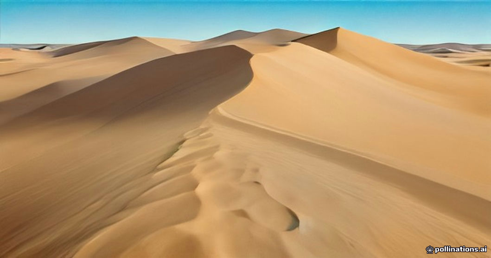

High summer in the Sahara brings daily temperatures exceeding 45°C (113°F) across Merzouga and Erg Chebbi. Visiting in July and August is entirely possible, but it requires a complete shift in routine compared to spring or autumn travel. This is not a season for open-ended afternoon walks or casual dune lounging.
During these peak summer months, local drivers and camp managers run schedules strictly anchored to the sun's position. Understanding how heat accumulates on sand, how air conditioning performs under canvas, and how daily timelines shift will make the difference between an exhausting trip and a manageable one.
Why Midday Dune Walks Are Dangerous
Quartz sand acts as a heat sink. While ambient air temperature might peak at 44°C around 3:00 PM, ground surface temperatures on Erg Chebbi regularly hit 65°C to 70°C (150°F+). Standard footwear like flip-flops or thin-soled canvas sneakers can soften or transmit heat directly into your feet within minutes.
Walking across soft sand requires twice the exertion of walking on flat ground, rapidly accelerating fluid loss. Between 11:00 AM and 5:00 PM, the dunes should be viewed strictly from inside air-conditioned vehicles or shaded buildings. For specific gear advice, read our guide on footwear strategy for the desert.
Hour-by-Hour Summer Schedule
To protect travelers and staff, summer itineraries invert traditional daytime activities. All physical movement on the sand is compressed into narrow windows at dusk and dawn.
- 05:30 - 07:30: Sunrise trek or dune walk when air sits around 28°C–32°C.
- 08:00 - 10:30: Breakfast and transit to climate-controlled spaces before heat surges.
- 11:00 - 17:00: Deep indoor rest, shaded hotel lounges, or long-haul driving in A/C vehicles.
- 18:30 - 20:30: Sunset walk or camel ride as sand begins releasing daytime heat.
- 21:00 onwards: Late dinner outdoors once night temperatures drop back toward 32°C.
Air Conditioning Realities in Desert Camps
Luxury desert camps equip canvas tents with standalone air conditioning units powered by generators or solar arrays. However, canvas offers zero thermal insulation against direct 45°C sun. During peak afternoon hours, a tent A/C unit can struggle to bring interior temperatures below 30°C.
Cooling improves significantly after dark when the ambient air cools down. Travelers who are sensitive to heat often choose permanent air-conditioned hotel rooms at the dune edge rather than overnighting in canvas tents during July and August. See our breakdown of luxury desert camps versus edge hotels for a side-by-side comparison.
Hydration, Driving, and Road Logistical Shifts
Because desert humidity hovers around 10% in summer, sweat evaporates instantly. You will lose fluids continuously without feeling wet or hot initially. We advise drinking 4 to 5 liters of water daily per person, supplemented with electrolytes.
Long highway drives from Marrakesh or Fes serve as valuable climate-controlled shelter during peak daytime hours. Professional drivers monitor tire pressures closely, as extreme asphalt temperatures increase flat tire risks on rural desert roads.
| Time Window | Estimated Sand Temp | Operational Recommendation |
|---|---|---|
| 06:00 - 08:00 | 25°C - 32°C | Camel treks, photography, sandboarding |
| 08:00 - 11:00 | 32°C - 45°C | Breakfast, transfer to hotels, road transit |
| 11:00 - 17:00 | 50°C - 70°C+ | Strict indoor shade rest or A/C vehicle travel |
| 17:00 - 19:30 | 40°C - 48°C | Shaded hotel pool or late evening sunset walk |
| 19:30 - 23:00 | 32°C - 38°C | Outdoor dinner, stargazing, music by the camp |

Illustration, not a photograph — for the real thing, you'll have to stand on the ridge yourself.
Quick answers
A few follow-up questions travelers ask about this.
Is visiting Merzouga in July or August a bad idea?
Not necessarily, provided you accept that midday hours will be spent indoors or driving. If you expect to hike dunes at noon, you will be disappointed and exposed to heat illness.
Are luxury camps open throughout the summer?
Yes, major luxury camps operate year-round using generators for room cooling, though some basic budget camps close during peak August heat.
Is camel trekking safe for animals and guests in summer?
Yes, because reputable operators strictly schedule camel rides for early dawn and late sunset, completely avoiding the harsh midday heat.
Planning your own route?
Tell us your dates and what matters to you — we'll answer with a straight recommendation, not a brochure.
Send an inquiry See the itineraries